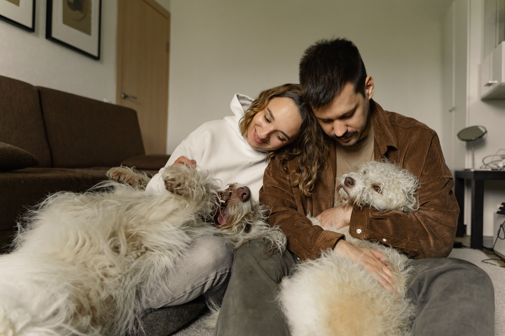

Conoce a perros y gatos que esperan una familia. Encuentra a tu compañero ideal a través de un proceso de adopción seguro, transparente y acompañado.
Sobre nosotrosEn Patitas creemos que todos los animales merecen un hogar lleno de amor. Nuestro propósito es conectar a perros y gatos con familias responsables, haciendo que el proceso de adopción sea seguro, sencillo y acompañado. Conoce más |
 |
| ‹ |
Adoptar fue una experiencia muy bonita. Nos acompañaron durante todo el proceso. Familia de Luna |
★★★★★
Estamos muy felices de haber encontrado a nuestro nuevo compañero. Todo el proceso fue sencillo y nos sentimos acompañados en cada paso. Familia de Max |
Gracias a Patitas encontramos un nuevo integrante para nuestra familia. Familia de Milo |
› |